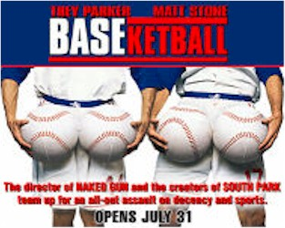
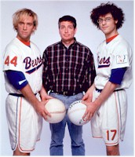
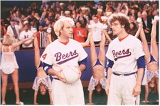

Contents | Features | Reviews | News | Archives | Store |
 |
|
| Movie Credits | Buy It! |
BASEKetBall
Review by Eddie Cockrell
Posted 7 August 1998
|  | Directed by Jerry Zucker Starring
Trey Parker, Matt Stone, Yasmine Bleeth, Written by David Zucker, Robert LoCash, |
Not since Bill met Ted and their excellent adventure defined an entire decade have a pair of dimbulbs shambled into the collective consciousness with the ingratiating brio of Trey Parker and Matt Stone, the "South Park" creators now starring in their first studio project. Larded over with the kind of no-holds-barred scatalogical humor and cheerfully anti-PC shenanigans that made director Jerry Zucker famous (see the Naked Gun franchise), this propulsive sports spoof arrives from left field to jostle for the summer gross-out limelight with There's Something About Mary (with which it shares a canine sight gag) and Jane Austen's Mafia! (directed by Zucker's Airplane! seatmate Jim Abrahams) but differs from those movies by virtue of an emotional connection to a facet of contemporary society and a genuine fondness for the eccentricities of its characters that would do Jonathan Swift or Preston Sturges -- righteous dudes both -- proud. Sure, the phooey factor is high, but hang tough through the body function humor and what emerges is a film that does for professional sports what The Loved One did for funerals.
After catching one of the three home runs Reggie Jackson hit in the 1977 World Series (the portentous opening mini-film on the dumbing-down of football, baseball, basketball and hockey is as hilarious as it is true), young Joseph "Coop" Cooper (Parker) and his best friend Doug Remer (Stone) become ardent sports fans. Crashing an unofficial high school reunion party years later, they're forced to improvise a new game blending baseball, basketball and trash-talking (inevitably dubbed the "Psyche Out") to avoid humiliation.
This hybrid sport becomes a hit, and five years later the pair, along with their diminutive buddy Kenny "Squeak" Scolari (Dian Bachar), are the stars of the Milwaukee Beers of the National Baseketball League, financed by eccentric millionaire Theodore Denslow. Upon his death, Denslow leaves the team to Coop in a living will (after which he performs Right Said Fred's "I'm Too Sexy"), but his widow Yvette (Jenny McCarthy) immediately aligns herself with conniving businessman Baxter Cain (Robert Vaughn) to undermine the NBL -- which has an idealistic policy of not trading players and paying everyone the same wage.
Meanwhile, Coop is fumbling through a budding romance with Jenna Reed (Yasmine Bleeth), who runs the financially imperiled Dreams Come True Foundation for terminally ill children (she calls them "health challenged" or "survival impaired"). One such youngster is the sad-eyed Joey (Trevor Einhorn), who finally settles for an average day with his favorite sports stars and is thus treated to a trip to the laundromat, an oil change, and a marathon tequila chugging session -- do a shot every time a fight breaks out on "The Jerry Springer Show" -- at a local bar.
True conflict threatens in the form of discord between the Coop and Doug, as the former becomes preoccupied with his business problems and the latter turns into a showboating superathlete. Squeak helps mend the rift, and the two make up with an explicit soul kiss on the Mulakalaka Balance Board of Trust during a Beers game (some plot points don't translate very well to the written word).
Crammed with the kind of throwaway sight gags that have become Zucker's trademark (watch for the director's pre-title Spike Lee-inspired credit, the tampon blimp, the custom-made caps worn by big-game losers, Reel Big Fish replacing the stadium organist -- finally, their cover of A-ha's "Take On Me" is available on the soundtrack -- hard-hat turbans and, of course, free-range chicken and anal probe nights at Beers Field), BASEketball never stumbles under the weight of these elaborate and non-stop visual puns as movies of this type often do. Rather, Parker and Stone seem to pick up steam as they go along, using the densely-packed script and their own manic improvisations (the Naked Gun-inspired hospital scene) to build a strong comic momentum. In this case, the generational collaboration works to spectacular effect: Zucker gets a huge shot of street cred without straying too far from his established formula, while Parker and Stone achieve a high-profile industry sanctioned pre-emptive strike to counteract the inevitable controversy which is sure to greet the NC-17 rated Orgazmo (more on that in a moment).
BASEketball wasn't written specifically for the duo; after working together on an in-house spoof of industrial films to mark Seagram's acquisition of Universal, Zucker came across the boys during the initial casting of the movie -- well before the social phenomenon known as "South Park." Stone and Bachar also appear in Parker's two previous features, the NC-17 rated Orgazmo and the self-explanatory Troma Team pickup Cannibal: The Musical, which are about to see a little more light on the strength of the TV show's wild popularity (the former is scheduled to open in September, while the latter has a short run at New York City's Cinema Village just now and may be purchased through Troma's website and better B-movie specialists around the land).
Parker is an amiable sort -- the Bill of the duo -- and brings a solid presence to the essentially straight-man role of Coop. Stone's Remer is a cross between Lou Costello and "Weird Al" Yankovic, while Bachar brings a distinctive new brand of game geekiness to Kenny (who gets called "Bitch" pretty much throughout the film). Bleeth and McCarthy survive the flurry of sex jokes that come their way with dignity intact (according to the truly funny online press kit, the former finished a scene, turned to the boys, and said "You guys aren't quite right, are you?"), while the truly impressive roster of supporting players and cameos include the original Man from U.N.C.L.E. (BASEketball marks Robert Vaughn's 100th film); Bob Costas and Al Michaels (the former gets a great dig at his network, while the latter cheerfully contributes to a spoof of that Monday night football show's wretchedly overdone graphics); Kareem Abdul-Jabbar (under glass, no less); Dale Earnhardt (who'd finally won the Daytona 500 the day before he filmed his scenes); Jackson himself (no, he doesn't get the ball back) and, in the greatest single send-up of "Unsolved Mysteries" to date, the immortal Robert Stack ("Update! We still have no fucking clue where this guy is!").
Gee, all Mary could summon was Brett Favre -- and cult music legend Jonathan Richman...
On the technical side, brief nods to cinematographer Steve Mason for the same giddy, gaudy restlessness he brought to Strictly Ballroom, the sly humor of Steven Jordan's meticulous production design and Catherine Adair's howlingly funny uniforms (the NBL teams include the L.A. Riots, Detroit Lemons, Roswell Aliens and San Francisco Ferries), and the snappy editing of Jeffrey Reiner (his numerous TV and film directing assignments include the unjustly neglected absurdist thriller Blood and Concrete).
The summer's din of tastelessness should confuse the bluenoses sufficiently for BASEketball to be enjoyed independently of any controversies surrounding the content. Those easily offended or put off by the trailer are depriving themselves of a genuinely original and oddly beguiling comedy with an extraordinarily high comedic batting average. A most excellent way to begin ushering satire into the millenium, BASEketball is an irreverent home run.
Contents | Features
| Reviews | News | Archives | Store
Copyright © 1999 by Nitrate Productions, Inc. All Rights Reserved.